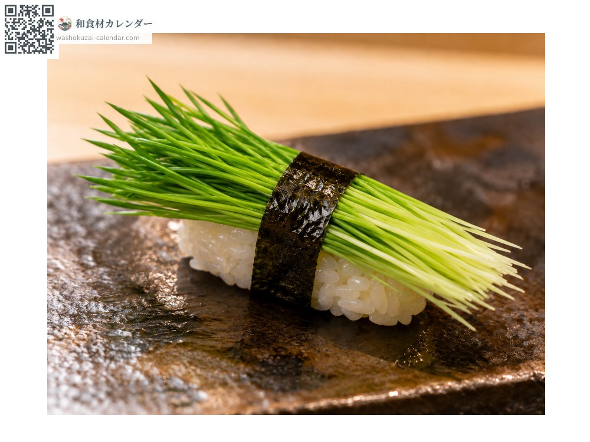
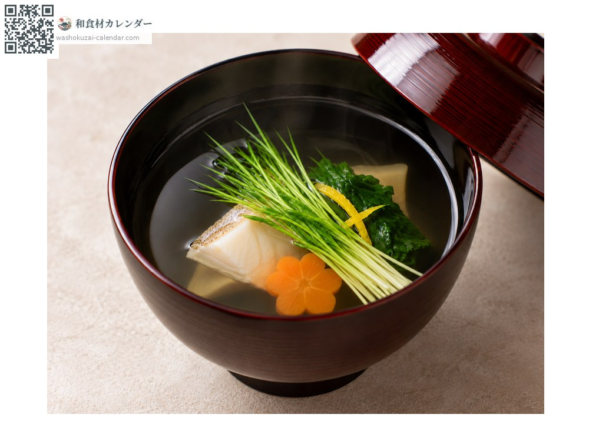
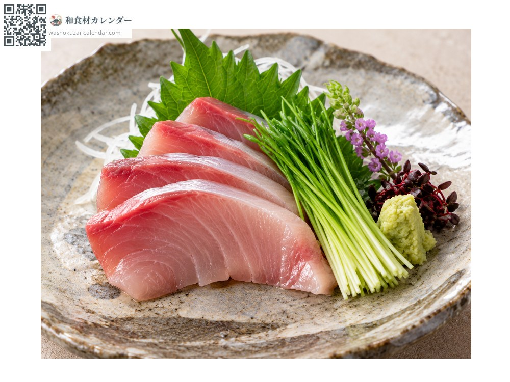

Vegetables
Negi sprouts
芽ねぎ めねぎ menegi
Also known asmenegi
No peak season recorded

When it is at its best
Jan
Feb
Mar
Apr
May
Jun
Jul
Aug
Sep
Oct
Nov
Dec
In seasonAvailable
How to cook

Sushi
As a topping for gunkan or thin rolls; crisp, with a strong scent.

Floated in soup
Laid in the bowl, where the scent rises and the colour shows.

As a garnish
Beside sashimi or an appetiser, where its fine form stands out.
How to choose
Deep green and growing straight, with a firm white base.
Storage
Sensitive to drying. Wrap in damp paper, seal and refrigerate. Use within two days.
Main areas
Good to know
Young spring onions a few centimetres tall. Sown densely and blanched under cover. Prized as a sushi topping in Edomae cooking, it is strongly aromatic but mild in pungency, and is treated as a quite separate ingredient from the mature plant.